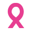
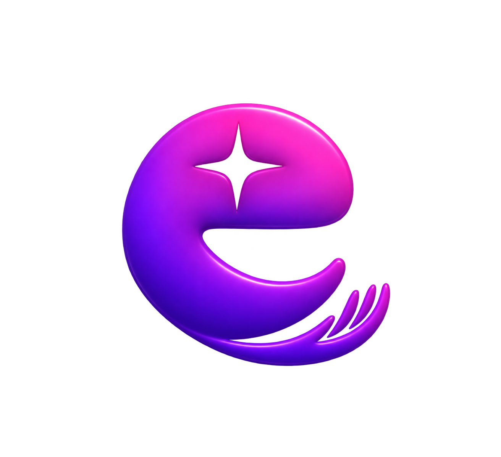
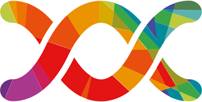
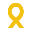
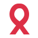
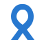
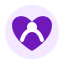
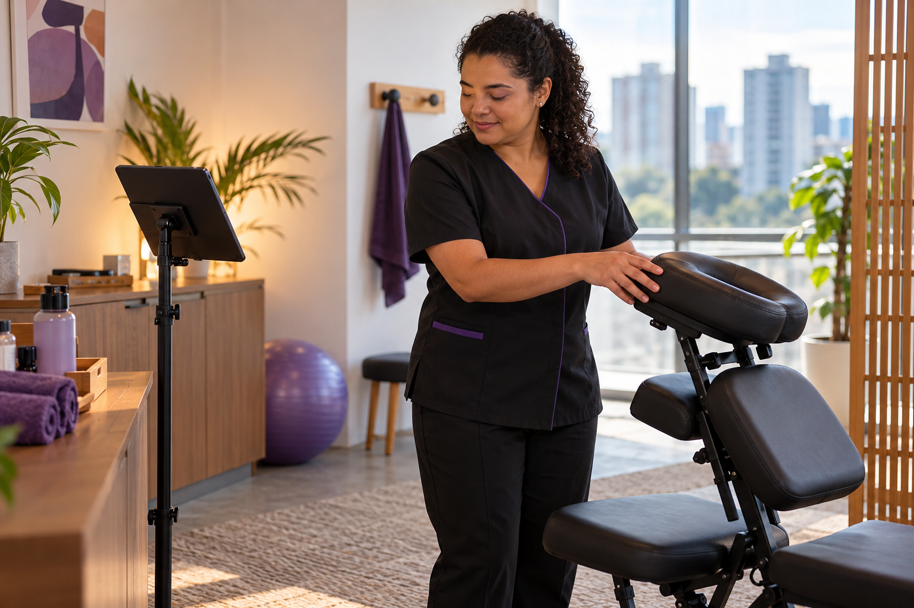
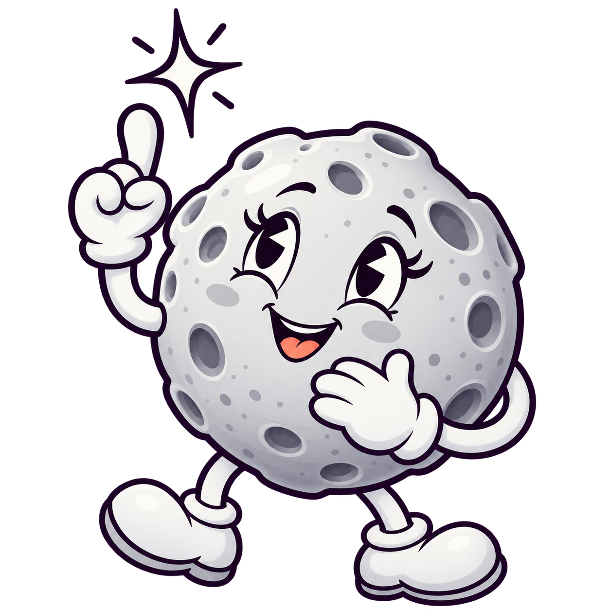

Equipe do Espaço Saúde25/09/2026 · 9h38 · Mural do Bem-estar
Já pensando no fim de semana? O que você pretende fazer para recarregar as energias? Um momento de descanso, uma caminhada, música ou simplesmente não fazer nada já pode fazer diferença.
Colaborador Demo
Descansar e buscar a Deus. Aproveito e desejo um bom fim de semana a todos!
Colaborador Demo
Dormir até tarde, visitar meus sogros e fazer calistenia sem preocupação com horários.
Equipe do Espaço Saúde24/09/2026 · 10h57 · Saúde mental
O que ajuda você a manter o equilíbrio emocional? Pode ser uma pausa, atividade física, música, silêncio, conversar com alguém ou simplesmente respirar e desacelerar.
Renan Miranda da Silva
A prática da minha religião e tocar instrumentos: violão, guitarra e baixo.
Sara Mota
Meu motivo de equilíbrio diário tem quatro patas e um narizinho gelado.
Equipe do Espaço Saúde23/09/2026 · 11h01 · Gratidão
Um momento para agradecer. Pare por um minutinho e pense em algo pelo qual você é grato: uma pessoa, uma conquista, um aprendizado ou uma pequena coisa que traz leveza.
Aline Crivelli
O sucesso não acontece de uma vez. Ele é construído todos os dias.

Campanha em destaque
Esquenta Outubro Rosa
Confira a iniciativa e o sorteio de inscrições para corridas solidárias divulgado pela equipe responsável.
Informações médicas permanecem protegidas e separadas dos dados operacionais dos benefícios. Gestores visualizam somente indicadores agregados.
Saúde integral
Encontre o cuidado certo para cada momento.
Atendimento médico, saúde mental, benefícios, segurança, inclusão e canais de acolhimento reunidos em um único lugar.

Espaço Saúde · Serviços clínicos e operacionais
Atendimento presencial, telemedicina e cuidados clínicos
Estrutura informada pelo Espaço Saúde com suporte em São Paulo e Londrina e atendimento remoto.
Telemedicina
segunda a sexta, 9h às 17h
São Paulo (presencial)
terça, 8h às 11h; quarta, 14h às 17h
Londrina (presencial)
segunda, 13h30 às 14h30; terça, 8h às 12h; quarta e quinta, 13h30 às 17h; sexta, 13h às 16h
TelemedicinaConsultas médicas online para colaboradores e dependentes elegíveis.
Consultas presenciaisAtendimento médico nas sedes de São Paulo e Londrina.
Aferição de pressãoMonitoramento contínuo de sinais vitais e pressão arterial.
Curativos e primeiros socorrosAtendimento inicial, higienização e curativos ambulatoriais.
Orientações de saúdeAcolhimento preventivo, esclarecimento de dúvidas e triagem.
Exames ocupacionaisPeriódicos, admissionais, demissionais e de retorno sob coordenação de SST.
Como encontrar o Espaço Saúde?
Explore a planta da unidade e conheça o percurso com a Selena.
Horários de comunicado anterior: confirme com a equipe do Espaço Saúde antes de usar estes horários como agenda atual. A telemedicina para colaboradores e dependentes elegíveis e a gratuidade sem coparticipação também constam daquele comunicado, sujeitos à confirmação.

Medicamentos e bem-estar
Vidalink
Plano de medicamentos e recursos de bem-estar conforme a modalidade contratada pela empresa.
Em produção, esta área deve apontar para o canal oficial autorizado pela organização.
Link removido da demonstração públicaComunidade e inclusão
Canal de Diversidade & Inclusão
Espaço reservado para o canal oficial do Comitê de Diversidade, grupos de afinidade e acessibilidade.
Conforme elegibilidade
Demais planos e convênios
Outros benefícios aparecerão conforme perfil, unidade e informações validadas pelo RH.
Acesso interno
Portal do RH
Endereço oficial ainda não fornecido. O botão será ativado quando o link for confirmado.
Link pendente de confirmação
Cobertura, elegibilidade, valores, contatos e horários podem variar. Informações devem ser confirmadas com RH, Benefícios e SST antes da implantação oficial.
Escolha pelo que você precisa
Cuidado, acolhimento e proteção
Cada necessidade segue para o canal responsável, sem misturar informações médicas e relatos sensíveis.
Saúde mental
Apoio psicológico, teleatendimento, conteúdos de autocuidado, estresse, ansiedade e riscos psicossociais.
Mulheres e equidade
Saúde da mulher, prevenção, maternidade, climatério, enfrentamento à violência e grupos de afinidade.
Respeito e inclusão
Orientação sobre racismo, capacitismo, LGBTfobia, neurodiversidade, acessibilidade e comunicação inclusiva.
Ética e denúncia
Canal independente para relatar assédio, discriminação ou outra conduta inadequada, com orientações sobre sigilo e anonimato.
RH, SST e CIPA
Direcionamento para questões trabalhistas, saúde ocupacional, prevenção de riscos e participação da CIPA.
!
Preciso de ajuda urgente
Orientação imediata para situações de risco à vida, crise emocional ou violência. Emergência não deve aguardar resposta por e-mail.
Saúde mental no trabalho
NR‑1 e riscos psicossociais
Desde 26 de maio de 2026, fatores psicossociais relacionados ao trabalho fazem parte expressamente do Gerenciamento de Riscos Ocupacionais. Sobrecarga, assédio, falta de autonomia, apoio insuficiente e isolamento no trabalho remoto precisam ser identificados, avaliados e tratados no GRO/PGR.
Centralizar o acesso não significa misturar informações.
Prontuários e conversas médicas não entram no Monday nem na agenda da massoterapia. Portal apenas direciona cada pessoa ao serviço correto; relatórios corporativos utilizam dados agregados e não clínicos.
Saúde em movimento
Campanhas e iniciativas
Acompanhe ações atuais e consulte o histórico de campanhas de saúde e bem-estar.
🏃♂️
Encerrado · resultado divulgado em 21/10Movimento & Hábitos Saudáveis
Desafio Movimento
126 colaboradores participaram do Desafio Movimento. Confira os oito sorteados e os prêmios divulgados pelo RH.
Práticas fundamentais para a saúde física, mental e preventiva em qualquer época do ano.
Hidratação contínua
Beba água regularmente ao longo do dia para manter a regulação térmica, a digestão e a clareza cognitiva.
Vacinação em dia
A imunização protege você e as pessoas ao seu redor contra doenças graves e de fácil transmissão.
Pausas ativas e ergonomia
Faça pequenas pausas para levantar, alongar e mudar a postura, aliviando a tensão lombar e nos ombros.
Alimentação consciente
Prefira alimentos naturais e refeições balanceadas, priorizando frutas, verduras e proteínas magras.
Higiene do sono
Mantenha horários regulares para dormir e desacelere o ritmo antes de deitar, evitando telas em excesso.
Cuidado emocional
Reconheça seus limites, compartilhe sentimentos com pessoas de confiança e busque apoio profissional sempre que precisar.
Higiene das mãos
Lave as mãos com água e sabão ou use álcool em gel, especialmente antes das refeições e depois de tossir ou espirrar.
Etiqueta respiratória
Ao tossir ou espirrar, cubra nariz e boca com o antebraço ou um lenço. Descarte o lenço e higienize as mãos.
Movimento para todos
Encontre uma forma de se movimentar adequada às suas possibilidades. Caminhar, dançar, fazer pausas ativas e praticar atividades adaptadas também contam.
Proteção solar
Ao passar tempo ao ar livre, procure sombra e use proteção adequada para a pele, especialmente nos horários de sol mais intenso.
Programação oficial
Calendário geral de atividades de outubro de 2026
Acompanhe todos os encontros, desafios e ações de saúde e prevenção do mês.
Sorteio Esquenta Outubro Rosa
Resultado divulgado pela Comunicação Interna com as 10 inscrições sorteadas para São Paulo e Londrina.
Wellhub: 1º mês por R$ 1
Oferta para você e familiares elegíveis até o plano Silver. Ver condições →
Webinar Wellhub “Você Sabia?”
Apresentação das novidades dos planos e detalhes do Desafio Movimento.
Início do Desafio Movimento
Abertura oficial da campanha de movimento, passos e check-ins com meta de 96.000 pontos.
64ª Corrida contra o Câncer de Mama
Prova esportiva e caminhada solidária prevista em São Paulo.
Último dia Wellhub por R$ 1
Encerramento da janela promocional para adesão e reativações com primeiro mês a R$ 1.
Webinar Câncer Colorretal
Abertura das ações do Outubro Rosa com Dr. José Tarcísio Penteado Buschinelli pelo Teams.
Encerramento do Desafio Movimento
Último dia para pontuação de passos e check-ins do desafio oficial.
10ª Go Pink – Corrida em Londrina
Corrida e caminhada de conscientização do Outubro Rosa prevista em Londrina.
Sorteio previsto · Desafio Movimento
Sorteio dos 8 prêmios entre os participantes do desafio (sorteio previsto).
Histórico recuperado
Campanhas e iniciativas de 2021 a 2026
Conteúdos reconstruídos a partir de 284 registros da comunidade do Espaço Saúde.

Histórico · 2026
Mural do Bem-estar · Setembro Amarelo
Sequência interativa de autocuidado, equilíbrio emocional, gratidão e pequenas conquistas durante o Setembro Amarelo.

Histórico · 2025
Junho Vermelho
Convite à doação voluntária de sangue e ao compartilhamento opcional da participação.
Histórico · 2026
Orgulho Autista e comunicação inclusiva
Conteúdos sobre neurodiversidade e webinar sobre interação e acolhimento de pessoas surdas.
Encerrada · 2025
Setembro Amarelo
Webinares, quiz de acolhimento, pausa consciente e orientações para reconhecer sofrimento emocional.
Encerrada · 2025
Mude1Hábito
Desafio de 21 dias com fotos no Viva Engage, pontos no Wellhub, mais de 100 interações e 146 participantes ativos.

Encerrada · 2025
Programa Inclui 2025
Acompanhamento personalizado para colaboradores com deficiência e orientação para atualização cadastral.

Encerrada · 2025
Circuito Outubro Rosa e Novembro Azul
Autocuidado, prevenção e divulgação de exames elegíveis com isenção de coparticipação.
Encerrada · 2025
SIPAT e saúde ocupacional
Autocuidado, qualidade de vida, estresse, movimento, alimentação, exames de rotina e segurança.
Encerrada · 2024
Desafio dos 21 Dias
Calendário de hábitos com fotos da comunidade, atividade física, sono, alimentação, meditação e bem-estar financeiro.
Encerrada · 2024
Janeiro Branco
Transformar, renovar e inspirar: campanha de promoção da saúde mental, autocuidado e procura de ajuda profissional.

Histórico · 2023
Espaço Saúde & Inclusão
Acolhimento, apoio psicológico, orientação médica e projeto de acompanhamento de pessoas com deficiência.
Histórico · 2022
Saúde emocional e autoestima
Conteúdos sobre terapia, autocuidado, autoestima, estresse, sono e prevenção ao suicídio.
Origem · 2021
Início da comunidade Espaço Saúde
Canal de notícias sobre promoção da saúde, qualidade de vida, terapia, gestação, patologias clínicas e Covid-19.
Histórico · 2022
Outubro Rosa
Registro de fotos das equipes de São Paulo e Londrina e webinar sobre câncer de mama. Arquivos em organização.
Proposta do piloto
Uma jornada acessível começa antes do atendimento.
Recursos digitais, orientação, espaço físico e procedimentos precisam funcionar como um único sistema.
Como chegar
Rota acessível até a sala
Projeto físico deverá ser validado com usuários e por profissional habilitado.
1
Antes de sair
Mapa, fotos, texto e orientação em áudio disponíveis no portal.
2
Entrada e recepção
Atendimento treinado, identificação clara e opção de solicitar apoio.
3
Deslocamento
Rota desobstruída, sinalização visual e tátil e piso tátil onde o projeto indicar.
4
Identificação da sala
Placa contrastante, relevo, Braille e ponto NFC ou QR com marcador tátil.
Ambiente previsível
Sala organizada para autonomia
Layout permanece fixo. Mudanças são comunicadas e apresentadas antes dos atendimentos.
Circulação sem fios, tapetes ou obstáculos
Materiais em posições padronizadas
Etiquetas táteis, letras grandes e contraste
Espaço para cadeira de rodas e transferência
Alertas visuais e sonoros
Estação SELENA com monitor grande, voz, texto e teclado
Desenho universal
Uma informação, diferentes formas de acesso
Nenhum canal é obrigatório.
Visual e baixa visão
Leitor de tela, áudio, contraste, zoom, Braille e referências táteis.
Auditiva
Texto, legendas, alertas visuais e vibração.
Física
Circulação acessível, comandos por voz ou teclado e mobiliário adequado.
Sensorial e cognitiva
Fluxo previsível, linguagem simples e iluminação ajustável.
Sobre o Espaço Saúde
Um ponto de encontro para cuidado, informação e autonomia.
Esta proposta evolui o canal já existente na organização parceira e reúne, em uma experiência acessível, conteúdos, campanhas, benefícios e serviços de saúde e bem-estar.
01
Um único ponto de acesso
Informações atualizadas ficam reunidas, sem depender de procurar mensagens antigas ou descobrir com quem falar.
02
Acessível para diferentes pessoas
Voz, texto, contraste, ampliação, teclado e alternativas presenciais coexistem na mesma jornada.
03
Privacidade por princípio
Dados médicos permanecem separados das informações operacionais necessárias para administrar benefícios.
Memória e evolução
Uma história de cuidado desde 2021
O PDF histórico reúne 284 registros da comunidade.
Nasce a comunidade Espaço Saúde
Promoção da saúde, qualidade de vida, terapia, gestação, orientação clínica e apoio durante a Covid-19.
Conteúdo preventivo e emocional
Saúde mental, autoestima, sono, atividade física, saúde da mulher e prevenção.
Inclusão e telemedicina
Atendimentos presenciais e remotos, apoio psicológico e acompanhamento de pessoas com deficiência.
Comunidade em movimento
Desafio dos 21 Dias, fotos no Viva Engage, ergonomia, bem-estar e campanhas de prevenção.
Mude1Hábito e Programa Inclui
Integração com Wellhub, campanhas interativas, SIPAT, diversidade e informação de saúde.
Mural do Bem-estar
Escuta, equilíbrio emocional, gratidão, pequenas conquistas e evolução para o Portal de Bem-estar.
Cultura que cuida
Cuidado, segurança psicológica e compromisso contínuo.
O portal conecta saúde integral, diversidade, inclusão e qualidade de vida. Certificações e reconhecimentos só devem ser publicados após autorização formal da organização responsável.
Protótipo
Projeto do Grupo 3
Hipótese desenvolvida para o Desafio de Inovação do Programa de Estágio 2026. Conteúdos, contas, profissionais e horários devem ser validados antes de uma implantação real.
Mural do Bem-estar · 25/09/2026
Como você quer se sentir nos próximos dias?
Cuidado também pode significar desacelerar e reconhecer aquilo de que precisamos.
Equipe do Espaço SaúdePublicado em 25/09/2026, às 9h38 · atualizado a partir do histórico do Espaço Saúde
Nem sempre precisamos de grandes planos para cuidar de nós. Às vezes, um momento de descanso, uma caminhada, ouvir uma música ou simplesmente não fazer nada já pode fazer diferença.
Pequenas pausas
Pausas intencionais ajudam a observar como estamos nos sentindo e a retomar as atividades com mais presença. O importante é encontrar uma possibilidade compatível com a própria rotina.
Escolha hoje uma coisa simples que você gostaria de fazer para cuidar de si.
Uma escolha possível
Alongar o corpo, beber água, respirar por alguns minutos ou reservar um horário de massoterapia são exemplos de ações que podem ser incorporadas ao dia.
Benefícios disponíveis
O Espaço Saúde reúne informações e caminhos de acesso aos serviços e benefícios de saúde e bem-estar oferecidos pela empresa.
O que pretendo fazer neste fim de semana para recarregar as energias é descansar e buscar a Deus. Aproveito e desejo um bom fim de semana a todos!
VO
Colaborador Demo25/09/2026 · 9h43
Dormir até tarde, visitar meus sogros e fazer calistenia sem preocupação com horários.
Acesso único para colaboradores e profissionais.

Benefício de saúde e bem-estar
Massoterapia acessível
Consulte profissionais e horários, receba lembretes e encontre orientações acessíveis para chegar e utilizar o serviço com autonomia.
Benefício de massoterapia: cada colaborador pode realizar até duas massagens por semana.
Se não puder comparecer, avise e cancele a reserva para liberar o horário. Como proposta preventiva, faltas sem aviso recorrentes seriam conferidas pelo RH antes de qualquer medida; não há bloqueio automático.
20 minduração demonstrativa da sessão
2 unidadesSão Paulo e Londrina
Agenda integradaconfirmações, cancelamentos e fila de espera
Acesso inclusivovoz, teclado, tela ampliada e apoio presencial
Escolha um profissional para consultar os horários disponíveis.
Proposta para validação do RH
Não poderá comparecer? Avise e libere a vaga.
Cancele a reserva antes do atendimento. Cancelamentos comunicados não entram na contagem de faltas sem aviso. O objetivo é disponibilizar o horário para outra pessoa.
Exemplo de prevenção: após a primeira falta sem aviso, enviar uma orientação; após a segunda, conversar com a pessoa; após três faltas confirmadas em 90 dias, encaminhar o caso ao RH para conferir os registros e ouvir o colaborador antes de avaliar qualquer medida. Nenhum bloqueio é automático.
Esta regra é apenas uma proposta. Prazos, exceções, canais acessíveis para aviso e eventual medida dependem de validação interna. Nesta demonstração, nenhum registro é enviado ao RH.
Etapa 1 de 3
Escolha o massoterapeuta
Horários ilustrativos gerados para os próximos dias úteis.
Unidade:
Turno:
Exibindo 8 de 8 massoterapeutas
Nenhum profissional encontrado com os filtros selecionados. Tente ajustar os filtros de unidade ou turno.
C
Etapa 2 de 3
Agenda de Profissional A
Londrina · manhã · sessões de 20 minutos
Setembro de 2026
DomSegTerQuaQuiSexSáb
DisponívelSelecionadoIndisponível
Etapa 3 de 3
Selecione um dia
Horário de Brasília
Dias destacados possuem horários disponíveis.
◷Escolha um dia disponível no calendário.
Horário selecionado—
Interesse por disponibilidade
Avise-me se surgir uma vaga
Escolha o profissional e o dia. O aviso aparece aqui no portal; não reserva automaticamente nem garante prioridade.
Meus atendimentos
Reservas e avaliações
Dados demonstrativos salvos somente neste navegador.
Profissional A, o próximo atendimento começa em 5 minutos.
Massagem rápida de 20 minutos · Sala Bem-estar · Prepare a sala e os materiais para a sessão.
Rotina profissional
Bom dia, Profissional A.
Carregando a agenda demonstrativa do Profissional A…
●Londrina · Horário de Brasília
--:--:--Carregando horário…
Próximo atendimento
--
Carregando agenda…
Sincronizando a agenda demonstrativa de Londrina…
ChegadaAguardando
Registre “não comparecimento” só após o período de tolerância. Esta tela é demonstrativa; ocorrências recorrentes exigem conferência e análise do RH antes de qualquer medida.
7agendados
1vaga livre
4hrestantes
● Ao vivo
Clima em Londrina
Londrina · Paraná
⛅
-- °CConsultando fonte conectada…
Sensação-- °C
Umidade-- %
Vento-- km/h
Precipitação0 mm
● Mobilidade
Rotas em Londrina
Unidade demonstrativa · Londrina, PR
Rota demonstrativa
DestinoUnidade demonstrativa
Ponto de partidaEscolha no Maps
Tempo de viagemDepende da origem

Ajuda da SelenaEscolha uma pergunta para ver a resposta
Oi! Em que posso ajudar?
Respostas rápidas sobre o portal
Como agendo uma massagem?
Abra Massoterapia, escolha o perfil de colaboradora de demonstração, selecione a unidade, o profissional, um dia disponível e o horário. Depois, confirme a reserva.
Entre com o mesmo perfil usado no agendamento. Na área Meus atendimentos, encontre sua reserva e use a opção de cancelar antes do horário marcado. A vaga volta a aparecer como disponível.
Na página Atendimento você encontra o Espaço Saúde, telemedicina, serviços presenciais, planos e canais de orientação. Os horários publicados vieram de um comunicado anterior e precisam de confirmação com a equipe.
Abra Campanhas para consultar as ações atuais e anteriores. Cada página reúne os detalhes, o calendário, os materiais disponíveis e as participações documentadas.
Ainda não. Esta versão é um protótipo: reservas, cancelamentos e avaliações ficam salvos apenas neste navegador. A sincronização real dependerá de autenticação e de uma base compartilhada.
Cada colaborador pode realizar até duas massagens por semana. Se não puder vir, cancele a reserva antes do horário: o cancelamento não é falta sem aviso. Reserva demonstrativa: não é enviada à agenda da empresa.
✓
Reserva demonstrativa registrada
O horário foi salvo neste navegador.
Este protótipo ainda não envia reservas nem lembretes para a agenda da empresa.
Massoterapia
Acesso ao serviço
Entre para continuar
Acesse com sua conta Google ou use os perfis de demonstração para testar.
ou perfis demonstrativos
Escolha uma conta demonstrativaProtótipo
Esta escolha simula o acesso e mantém as reservas de teste neste navegador.
Protótipo: as reservas de teste ficam salvas neste navegador.
Ajuda
Como podemos orientar?
Escolha o que você precisa. Cada opção direciona para o canal responsável, com privacidade e sem misturar informações clínicas com relatos de ética.
Contatos corporativos exibidos abaixo foram recuperados do histórico e precisam de confirmação antes da implantação oficial.
O que pretendo fazer neste fim de semana para recarregar as energias é descansar e buscar a Deus. Aproveito e desejo um bom fim de semana a todos!
Dormir até tarde, visitar meus sogros e fazer calistenia sem preocupação com horários.